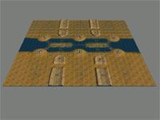
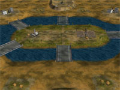
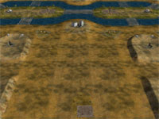
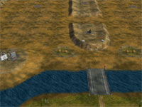
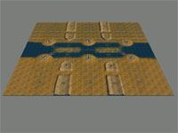
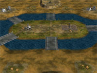
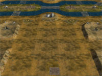
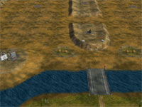

   
   Download this map for Generals Zero Hour or Generals
A low-detailed 400x400 6-player desert map.
A large desert with a central lake. Two islands and some bridges. A few civilian buildings, tents, and bunkers. Simple layout.
You start out with one supply dock. More supply docks between the base areas and on the islands. Oil refineries on the islands as well. There are oil derricks in the deserts and towards the middle.
Works fine throughout the entire game.